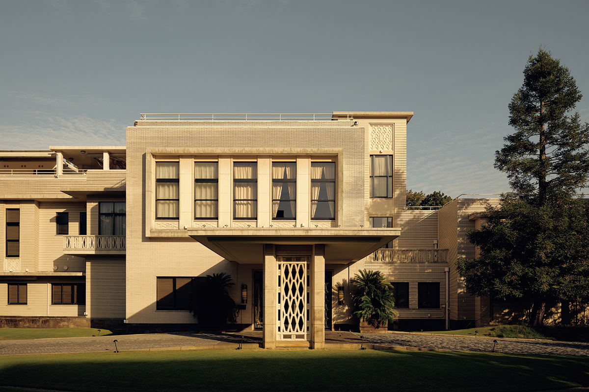
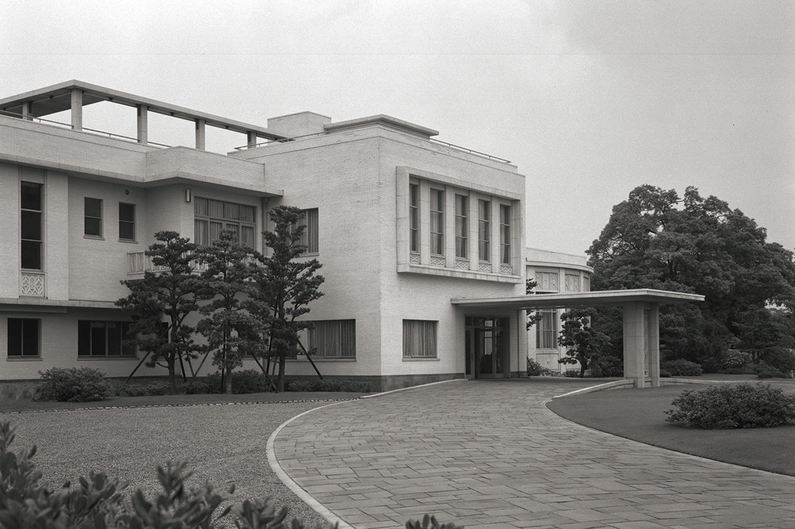
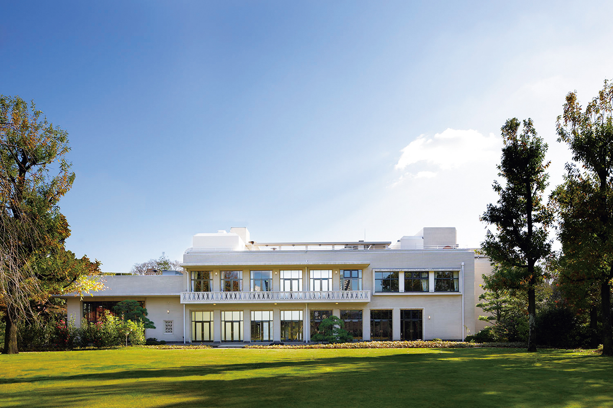
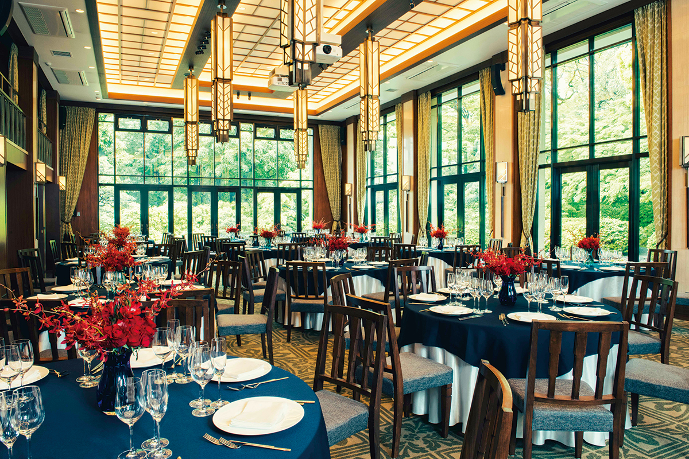

Префектура Осака · Осака · архитектура
«Гарден Ориентал Осака»: гостевой дом города 1959 года, где снова принимают гостей

В 1959 году Осака построила особняк, чтобы принимать гостей со всего мира. Сегодня в бывшем гостевом доме мэрии работают лаунж, ресторан и свадебный зал, и зайти сюда может любой.
Здание
Дом с разными лицами
На зелёной полосе у реки Окава, которая течёт через центр Осаки, стоит спокойное светлое здание. Сегодня его знают как «Гарден Ориентал Осака» (THE GARDEN ORIENTAL OSAKA), а построили его в 1959 году как гостевой дом мэрии Осаки. Город, оправившийся после войны, хотел снова стать международным, и ему понадобилось место, где можно встречать высоких гостей из-за рубежа. Поводом стала конференция мэров и глав торговых палат Японии и США, которая прошла в Осаке в том же 1959 году.

Если встать перед главным фасадом, сразу чувствуешь праздничность. Здание вовсе не похоже на прямоугольную коробку: стены то выступают вперёд, то отступают, балконы и перила задают ритм, а кремовая плитка напоминает изящный частный особняк. Длинный навес над подъездом для машин прямо говорит о том, для чего дом строили.
С обратной стороны впечатление совсем другое. За газоном течёт Окава, и вытянутые вдоль фасада балконы спокойно перекликаются с этим видом. Делать разные «лица» здания для разных сторон и задач умели ещё западные особняки эпохи Мэйдзи, но здесь этот приём переведён на язык послевоенного модернизма.

Характер послевоенного гостевого дома лучше всего виден на лестнице. С потолка спускается светильник, сделанный специально для этого здания, а перила обвивают его плавной кривой от вестибюля до террасы на крыше. При этом лишних украшений нет, если не считать скромного рельефа с лебедем на самом верху светильника. Детали промышленного производства, но выполнены с почти ремесленной тщательностью, и гостеприимство здесь ощущается иначе, чем в довоенных особняках.
Сегодня
От приёмов мэрии к лаунжу и свадьбам
Когда роль гостевого дома города ослабла, здание постепенно ушло из памяти горожан. Всё изменило решение передать его частному оператору. После реконструкции 2014 года здесь работают свадебный зал и ресторан, и сюда приходят самые обычные люди. Планировку и интерьеры переделали, но каркас здания сохранили, а новое оформление опирается на дух 1959 года. Модерновый гостевой дом такого рода в Японии большая редкость, и именно это создаёт здесь особую атмосферу.

Архитектор
Кэндзо Такэкоси
Гостевой дом спроектировал архитектор Кэндзо Такэкоси. Он сохранил всё ценное, что умели довоенные мастера, и создал гостевой дом, отвечающий новому послевоенному времени. Тем самым он ответил на замысел тогдашней Осаки: принимать гостей со всего мира и показать Осаку как большой международный город.
В Осаке сохранились и довоенные здания, в которых участвовали Такэкоси и Хасэбэ: главный офис банка «Сумитомо Мицуи» в Осаке, здание Осакской биржи, главное здание страховой компании «Ниппон Сэймэй». Если обойти их все, легче понять, какое место среди них занимает гостевой дом у Окавы.
«Гарден Ориентал Осака»
- Адрес
- префектура Осака, Осака, район Миякодзима, Амидзима-тё, 10-35
- Телефон
- +81 6-6353-8810
- Часы работы
- лаунж в будни 11:00–17:00, в субботу, воскресенье и праздники с 12:00
- Выходные
- вторник, а также дни технического обслуживания
- Цены / Вход
- вход свободный (лаунж и залы платные)